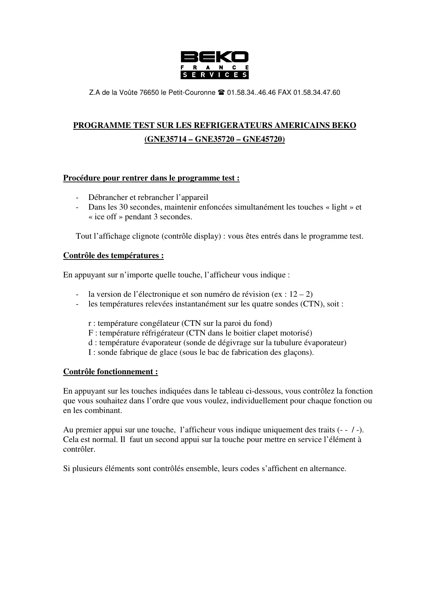
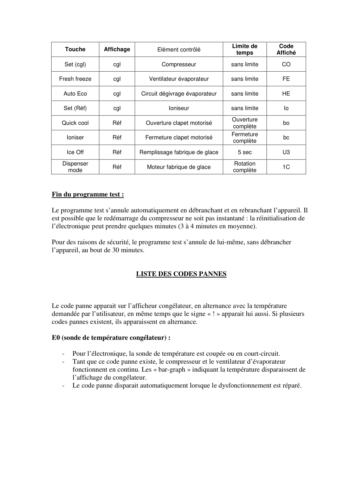
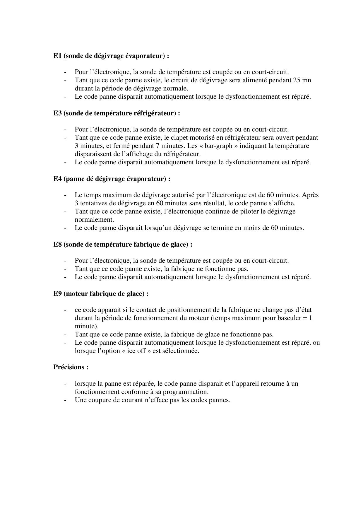

ProgrTest B1030 GNE35714 Fr

Z.A de la Voûte 76650 le Petit-Couronne 01.58.34..46.46 FAX 01.58.34.47.60PROGRAMME TEST SUR LES REFRIGERATEURS AMERICAINS BEKO(GNE35714 – GNE35720 – GNE45720)Procédure pour rentrer dans le programme test :-Débrancher et rebrancher l’appareil-Dans les 30 secondes, maintenir enfoncées simultanément les touches « light » et« ice off » pendant 3 secondes.Tout l’affichage clignote (contrôle display) : vous êtes entrés dans le programme test.Contrôle des températures :En appuyant sur n’importe quelle touche, l’afficheur vous indique :-la version de l’électronique et son numéro de révision (ex : 12 – 2)-les températures relevées instantanément sur les quatre sondes (CTN), soit :r : température congélateur (CTN sur la paroi du fond)F : température réfrigérateur (CTN dans le boitier clapet motorisé)d : température évaporateur (sonde de dégivrage sur la tubulure évaporateur)I : sonde fabrique de glace (sous le bac de fabrication des glaçons).Contrôle fonctionnement :En appuyant sur les touches indiquées dans le tableau ci-dessous, vous contrôlez la fonctionque vous souhaitez dans l’ordre que vous voulez, individuellement pour chaque fonction ouen les combinant.Au premier appui sur une touche, l’afficheur vous indique uniquement des traits (- - / -).Cela est normal. Il faut un second appui sur la touche pour mettre en service l’élément àcontrôler.Si plusieurs éléments sont contrôlés ensemble, leurs codes s’affichent en alternance.
1 / 4
ToucheAffichageElément contrôléLimite detempsCodeAffichéSet (cgl)cglCompresseursans limiteCOFresh freezecglVentilateur évaporateursans limiteFEAuto EcocglCircuit dégivrage évaporateursans limiteHESet (Réf)cglIoniseursans limiteIoQuick coolRéfOuverture clapet motoriséOuverturecomplèteboIoniserRéfFermeture clapet motoriséFermeturecomplètebcIce OffRéfRemplissage fabrique de glace5 secU3DispensermodeRéfMoteur fabrique de glaceRotationcomplète1CFin du programme test :Le programme test s’annule automatiquement en débranchant et en rebranchant l’appareil. Ilest possible que le redémarrage du compresseur ne soit pas instantané : la réinitialisation del’électronique peut prendre quelques minutes (3 à 4 minutes en moyenne).Pour des raisons de sécurité, le programme test s’annule de lui-même, sans débrancherl’appareil, au bout de 30 minutes.LISTE DES CODES PANNESLe code panne apparait sur l’afficheur congélateur, en alternance avec la températuredemandée par l’utilisateur, en même temps que le signe « ! » apparait lui aussi. Si plusieurscodes pannes existent, ils apparaissent en alternance.E0 (sonde de température congélateur) :-Pour l’électronique, la sonde de température est coupée ou en court-circuit.-Tant que ce code panne existe, le compresseur et le ventilateur d’évaporateurfonctionnent en continu. Les « bar-graph » indiquant la température disparaissent del’affichage du congélateur.-Le code panne disparait automatiquement lorsque le dysfonctionnement est réparé.
2 / 4
E1 (sonde de dégivrage évaporateur) :-Pour l’électronique, la sonde de température est coupée ou en court-circuit.-Tant que ce code panne existe, le circuit de dégivrage sera alimenté pendant 25 mndurant la période de dégivrage normale.-Le code panne disparait automatiquement lorsque le dysfonctionnement est réparé.E3 (sonde de température réfrigérateur) :-Pour l’électronique, la sonde de température est coupée ou en court-circuit.-Tant que ce code panne existe, le clapet motorisé en réfrigérateur sera ouvert pendant3 minutes, et fermé pendant 7 minutes. Les « bar-graph » indiquant la températuredisparaissent de l’affichage du réfrigérateur.-Le code panne disparait automatiquement lorsque le dysfonctionnement est réparé.E4 (panne dé dégivrage évaporateur) :-Le temps maximum de dégivrage autorisé par l’électronique est de 60 minutes. Après3 tentatives de dégivrage en 60 minutes sans résultat, le code panne s’affiche.-Tant que ce code panne existe, l’électronique continue de piloter le dégivragenormalement.-Le code panne disparait lorsqu’un dégivrage se termine en moins de 60 minutes.E8 (sonde de température fabrique de glace) :-Pour l’électronique, la sonde de température est coupée ou en court-circuit.-Tant que ce code panne existe, la fabrique ne fonctionne pas.-Le code panne disparait automatiquement lorsque le dysfonctionnement est réparé.E9 (moteur fabrique de glace) :-ce code apparait si le contact de positionnement de la fabrique ne change pas d’étatdurant la période de fonctionnement du moteur (temps maximum pour basculer = 1minute).-Tant que ce code panne existe, la fabrique de glace ne fonctionne pas.-Le code panne disparait automatiquement lorsque le dysfonctionnement est réparé, oulorsque l’option « ice off » est sélectionnée.Précisions :-lorsque la panne est réparée, le code panne disparait et l’appareil retourne à unfonctionnement conforme à sa programmation.-Une coupure de courant n’efface pas les codes pannes.
3 / 4